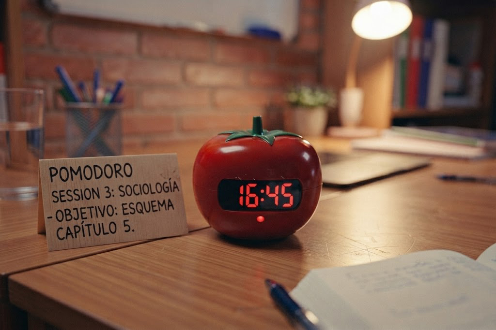

¿Qué es la técnica Pomodoro?
La técnica Pomodoro es un método de gestión del tiempo creado para ayudarte a mantener la concentración durante periodos cortos e intensos de trabajo. Su nombre proviene del temporizador de cocina con forma de tomate ("pomodoro" en italiano) que utilizaba su creador.
Su funcionamiento es sencillo: trabajas durante un tiempo determinado sin interrupciones y luego realizas un descanso breve. Este ciclo ayuda a mantener el cerebro enfocado y reduce la sensación de agotamiento que suele aparecer después de largas horas de estudio.
"Trabajar más horas no significa ser más productivo. Lo importante es mantener una atención de calidad."
— EnfocaT¿Cómo funciona la técnica Pomodoro?
La técnica Pomodoro se basa en dividir el trabajo en bloques de tiempo para mantener un alto nivel de concentración sin llegar al agotamiento. En lugar de estudiar durante horas seguidas, alternas sesiones de trabajo con descansos cortos que permiten recuperar energía.
🍅 25 minutos
Concéntrate únicamente en una tarea. Evita revisar el celular, redes sociales o cualquier otra distracción.
☕ 5 minutos
Levántate, toma agua, estira el cuerpo o descansa la vista antes de comenzar el siguiente bloque.
🔁 Repite 4 veces
Después de completar cuatro Pomodoros seguidos habrás trabajado cerca de dos horas de forma muy eficiente.
🌴 Descanso largo
Al finalizar los cuatro ciclos toma un descanso de 20 a 30 minutos para recuperar completamente tu energía.

Beneficios de utilizar Pomodoro
Miles de estudiantes y profesionales utilizan esta técnica porque mejora la concentración y reduce la sensación de cansancio. Al trabajar por intervalos, el cerebro mantiene un mejor rendimiento durante más tiempo.
📈 ¿Qué puedes conseguir?
Con una aplicación constante podrás terminar tareas más rápido, disminuir la procrastinación y mantener una mejor organización durante el día.
- ✅ Mayor concentración.
- ✅ Menos distracciones.
- ✅ Reduce el agotamiento mental.
- ✅ Facilita comenzar tareas difíciles.
- ✅ Mejora la administración del tiempo.
- ✅ Aumenta la productividad diaria.
"La productividad no consiste en trabajar más tiempo, sino en aprovechar mejor el tiempo disponible."
— EnfocaTCómo aplicar la técnica paso a paso
No necesitas herramientas complicadas para comenzar. Solo sigue estos pasos cada vez que vayas a estudiar.
1️⃣ Elige una sola tarea
No intentes hacer varias cosas al mismo tiempo. Define un objetivo claro antes de iniciar el temporizador.
2️⃣ Programa 25 minutos
Utiliza un cronómetro o una aplicación especializada y trabaja sin interrupciones hasta que termine el tiempo.
3️⃣ Descansa 5 minutos
Aprovecha el descanso para caminar, hidratarte o relajar la vista. Evita comenzar otra actividad que te distraiga.
4️⃣ Repite el ciclo
Después de cuatro Pomodoros realiza un descanso largo de entre 20 y 30 minutos antes de continuar.
💡 Consejo EnfocaT
Antes de iniciar cada Pomodoro escribe exactamente qué vas a lograr en esos 25 minutos. Tener un objetivo específico aumenta significativamente la probabilidad de terminar la tarea.
Herramientas recomendadas
Aunque puedes utilizar un cronómetro tradicional, existen aplicaciones diseñadas específicamente para la técnica Pomodoro que facilitan el seguimiento de tus sesiones de estudio y descansos.
🌳 Forest
Convierte tu tiempo de concentración en un árbol virtual que crecerá mientras no uses el celular.
⏰ Focus To-Do
Combina la técnica Pomodoro con listas de tareas para organizar mejor tu día.
💻 Pomofocus
Temporizador online gratuito, sencillo y perfecto para estudiar desde el computador.
📅 Google Calendar
Programa tus bloques Pomodoro para mantener una rutina organizada durante la semana.
Errores comunes al utilizar Pomodoro
Muchas personas abandonan esta técnica porque cometen algunos errores que reducen su efectividad. Evitarlos hará que obtengas mejores resultados.
- ❌ Revisar el celular durante los 25 minutos.
- ❌ Saltarse los descansos.
- ❌ Trabajar en varias tareas al mismo tiempo.
- ❌ Elegir objetivos demasiado grandes para un solo Pomodoro.
- ❌ No planificar qué harás antes de iniciar el temporizador.
- ❌ Interrumpir constantemente el cronómetro.
Conclusión
La técnica Pomodoro demuestra que estudiar durante muchas horas no siempre significa aprender más. Organizar el tiempo en intervalos de concentración y descanso ayuda a mantener la motivación, reducir el estrés y aprovechar mejor cada sesión de estudio.
En EnfocaT creemos que la productividad no consiste en hacer más cosas, sino en hacer las cosas correctas con el enfoque adecuado. Prueba esta técnica durante una semana y descubre cómo pequeños cambios pueden generar grandes resultados.
📤 Comparte este artículo
📚 Artículos relacionados
🚫 Cómo dejar de procrastinar
Aprende estrategias para vencer la procrastinación y empezar tus tareas con más facilidad.
🧠 Hábitos para estudiantes exitosos
Descubre hábitos que mejorarán tu rendimiento académico y tu organización.
📱 Cómo reducir las distracciones digitales
Recupera tu concentración controlando el uso del celular y las redes sociales.